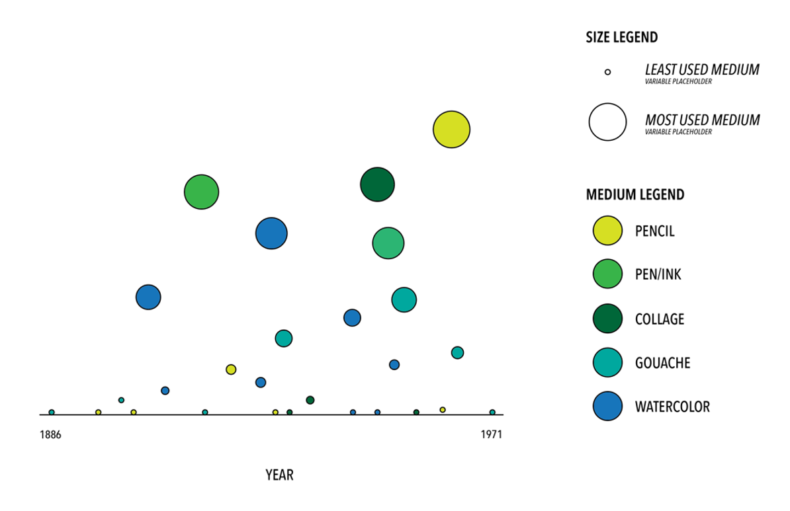

The goal of this project is to dig deeper into the MoMA Colelection's Datasets by studying one particular
artist: Ludwig Mies van der Rohe. By looking at Mies van der Rohe's works, we want to undrstand the quantity of artworks produced by Mies van der Rohe (collected by the MoMA),
the variety of mediums he used to create these artworks, and if there was a change in mediums as he continued to produce more works. Through a density scatterplot,
we are able to visualize on a timeline the amount of works he produced each year (represented by bubble size) and with what mediums used to produce those works (represented by colors).